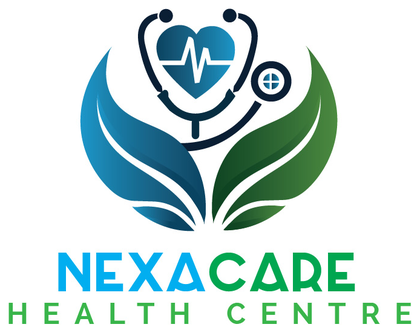
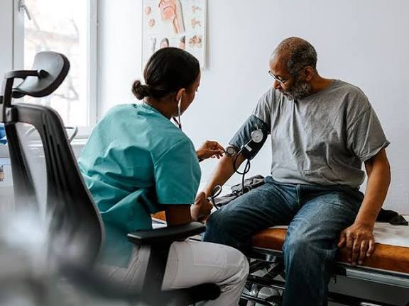

High blood pressure (hypertension)
High blood pressure means the force of blood against your artery walls is consistently higher than it should be.

Outpatient care, maternal and child health, laboratory and pharmacy services, and care at home in Gatua, Kitale. Walk in, or request an appointment.
Consultations for new concerns, follow-up visits and general check-ups.
Read moreSupport for women during pregnancy and after birth, and for babies and children as they grow.
Read moreTests on samples such as blood or urine to support diagnosis and monitoring.
Read moreMedicines dispensed with clear guidance on using them safely.
Read moreInformation and support to help you decide whether and when to have children.
Read moreCare for sudden, serious illness or injury.
Read moreTreatment for minor injuries and short procedures, with clear aftercare advice.
Read moreA private space to talk through stress, worries and difficult life events.
Read moreHelp to move well after injury, illness or surgery, or with long-term conditions.
Read moreSupport at home for older adults, people recovering from illness and their families.
Read moreSpeak to a health professional remotely when a visit is not needed or not possible.
Read moreNexaCare Health Centre is a health centre in Gatua, Kitale. You can see a clinician, have tests done and collect medicines in one place, and ask about care at home or by telemedicine.
An outpatient consultation is a visit where you see a clinician, receive an assessment and go home the same day. It is often the first step for a new health concern, a follow-up or a general check-up.
Read more
Care for everyday health in Gatua, Kitale, from a first consultation to support at home.
High blood pressure means the force of blood against your artery walls is consistently higher than it should be.
A healthy childhood relies on good nutrition, protection from infection through vaccination, safe surroundings and quick care when a child is unwell..
Malaria is an illness spread by the bites of infected mosquitoes.
Tests that support diagnosis and monitoring.
Medicines with guidance on using them safely.
For sudden, serious illness or injury.
Treatment of minor injuries, with aftercare advice.
NexaCare brings consultations, laboratory and pharmacy services, maternal and child health, counselling and physiotherapy together in Gatua, Kitale. Walk-ins are welcome, and you can also request an appointment.
Homecare supports older adults, people recovering from illness and the families who care for them. The team talks through every request before anything is arranged.